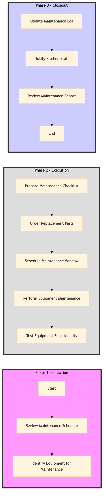

| Role | Steps |
|---|---|
| Facilities Engineer | 1.1 1.2 2.1 2.4 2.5 3.1 3.3 |
| Procurement Manager | 2.2 |
| Executive Housekeeper | 3.2 |
| Step | Name | Role | System | Input | Output | KPI | Dec? | Exc? | Pain Point / Risk |
|---|---|---|---|---|---|---|---|---|---|
| 1.1 | Review Maintenance Schedule | Facilities Engineer | Oracle OPERA Cloud | Maintenance schedule | Updated maintenance log | Less than 5 minutes per review | N | Y | Overdue equipment maintenance can lead to unexpected downtime |
| 1.2 | Identify Equipment for Maintenance | Facilities Engineer | Oracle OPERA Cloud | Maintenance log | List of equipment needing maintenance | Less than 3 minutes per identification | N | Y | Neglecting critical equipment can affect food quality and safety |
| 2.1 | Prepare Maintenance Checklist | Facilities Engineer | Oracle OPERA Cloud | List of equipment needing maintenance | Maintenance checklist | Less than 5 minutes per checklist | N | Y | Incomplete checklists can lead to missed issues |
| 2.2 | Order Replacement Parts | Procurement Manager | Birchstreet Procurement | Maintenance checklist | Purchase order for parts | Less than 10 minutes per order | N | Y | Delayed part delivery can cause extended downtime |
| 2.3 | Schedule Maintenance Window | Facilities Engineer | Oracle OPERA Cloud | Maintenance checklist and parts order confirmation | Scheduled maintenance window | Less than 15 minutes per scheduling | N | Y | Overlapping maintenance windows can disrupt operations |
| 2.4 | Perform Equipment Maintenance | Facilities Engineer | Oracle OPERA Cloud | Scheduled maintenance window and checklist | Maintenance report | Less than 30 minutes per equipment | Y | Y | Equipment malfunction during maintenance can lead to further delays |
| 2.5 | Test Equipment Functionality | Facilities Engineer | Oracle OPERA Cloud | Maintenance report | Equipment test results | Less than 10 minutes per test | Y | Y | Non-functional equipment can affect kitchen operations |
| 3.1 | Update Maintenance Log | Facilities Engineer | Oracle OPERA Cloud | Equipment test results | Updated maintenance log | Less than 5 minutes per update | N | Y | Outdated logs can lead to missed maintenance windows |
| 3.2 | Notify Kitchen Staff | Executive Housekeeper | Oracle OPERA Cloud | Updated maintenance log and test results | Notification to kitchen staff | Less than 5 minutes per notification | N | Y | Uninformed kitchen staff can lead to operational inefficiencies |
| 3.3 | Review Maintenance Report | Facilities Engineer | Oracle OPERA Cloud | Maintenance report and test results | Final maintenance review | Less than 10 minutes per review | N | Y | Neglected reviews can lead to recurring issues |
This process outlines the steps for maintaining kitchen equipment in a full-service Marriott hotel using Oracle OPERA Cloud PMS and other relevant systems.